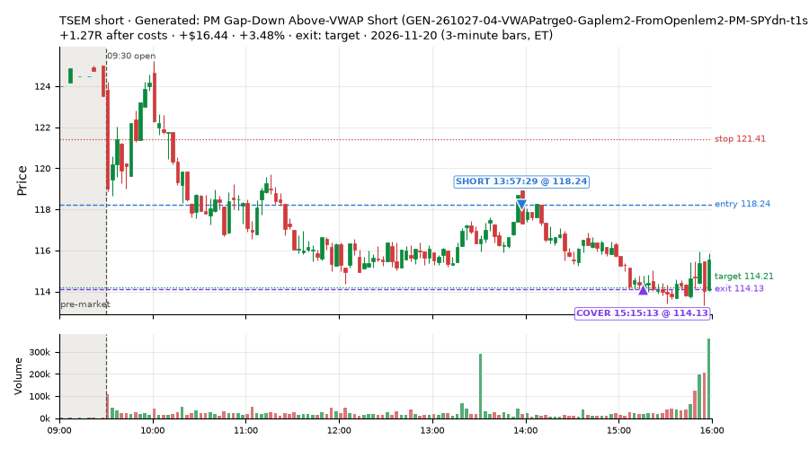
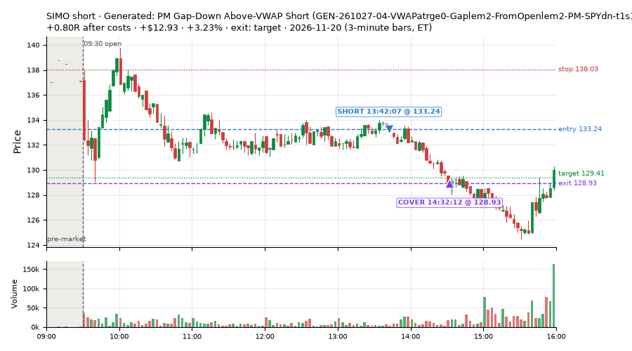
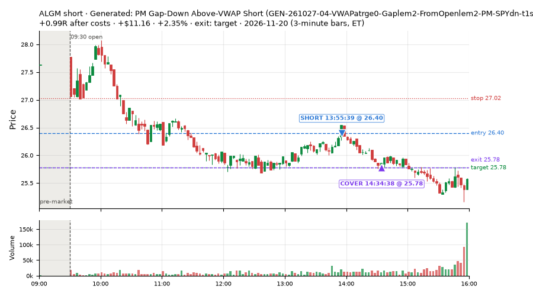
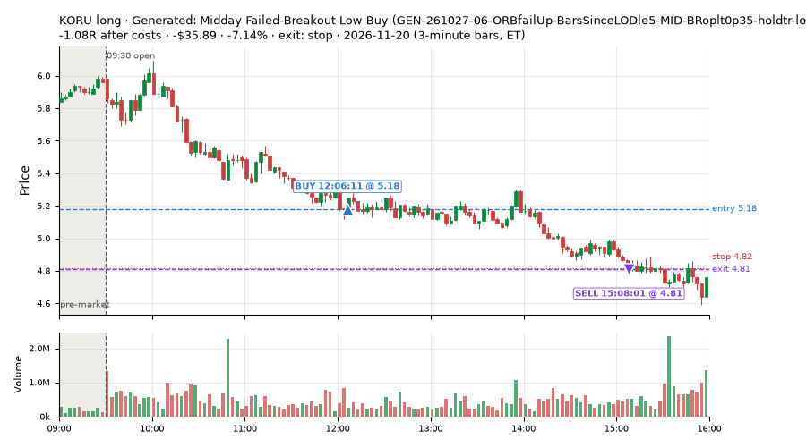
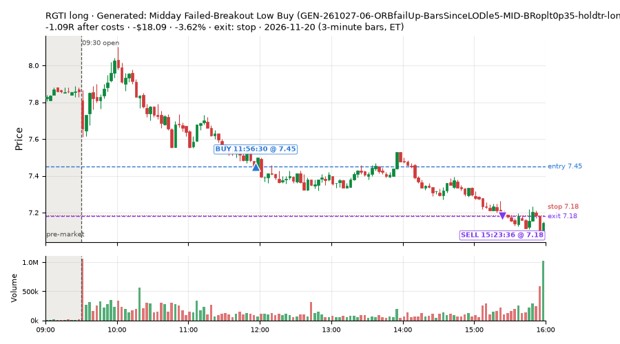
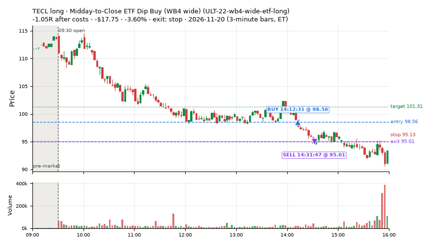
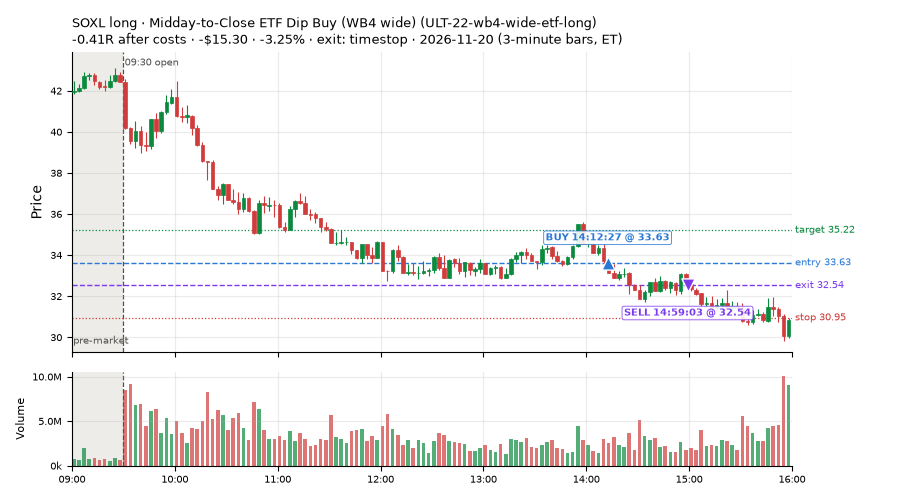

192 trades · win rate 22% · P/L $-714.56
PROBATION: no live setup has passed both locked test periods. 10 owner-directed setups added 2026-10-08 (MarcoFlow top 5 + 5 new), untested live. RW6G1 (RW6 + VWAP band guard) added 2026-10-09, probation.

| Symbol | Setup | Side | In | Out | Entry | Exit | Exit reason | % gained | P/L |
|---|---|---|---|---|---|---|---|---|---|
| TSEM | Generated: PM Gap-Down Above-VWAP Short (GEN-261027-04-VWAPatrge0-Gaplem2-FromOpenlem2-PM-SPYdn-t1s1-short) | short | 13:57 | 15:15 | 118.24 | 114.13 | target | +3.48% | $16.44 |
| SIMO | Generated: PM Gap-Down Above-VWAP Short (GEN-261027-04-VWAPatrge0-Gaplem2-FromOpenlem2-PM-SPYdn-t1s1-short) | short | 13:42 | 14:32 | 133.24 | 128.93 | target | +3.23% | $12.93 |
| ALGM | Generated: PM Gap-Down Above-VWAP Short (GEN-261027-04-VWAPatrge0-Gaplem2-FromOpenlem2-PM-SPYdn-t1s1-short) | short | 13:55 | 14:34 | 26.40 | 25.78 | target | +2.35% | $11.16 |
| Symbol | Setup | Side | In | Out | Entry | Exit | Exit reason | % lost | P/L |
|---|---|---|---|---|---|---|---|---|---|
| KORU | GEN-261027-06-ORBfailUp-BarsSinceLODle5-MID-BRoplt0p35-holdtr-long | long | 12:06 | 15:08 | 5.18 | 4.81 | stop | -7.14% | $-35.89 |
| NVDL | GEN-261026-06-NewLOD-SMA20slopelem0p28-LATE-SPYltm0p25-t1s1-long | long | 14:27 | 15:13 | 11.23 | 10.58 | stop | -5.79% | $-28.63 |
| RGTI | GEN-261027-06-ORBfailUp-BarsSinceLODle5-MID-BRoplt0p35-holdtr-long | long | 11:56 | 15:23 | 7.45 | 7.18 | stop | -3.62% | $-18.09 |
| TECL | ULT-22-wb4-wide-etf-long | long | 14:12 | 14:31 | 98.56 | 95.01 | stop | -3.60% | $-17.75 |
| SOXL | ULT-22-wb4-wide-etf-long | long | 14:12 | 14:59 | 33.63 | 32.54 | timestop | -3.25% | $-15.30 |







Signal to fill: median 1s, 90th percentile 2s (192 trades). Bars close each minute; the order follows the bar close.
Best excursion (MFE): median 0.33R; worst (MAE) median 1.02R. 41% of trades never got +0.25R in our favour; 4 reached +1R and still closed at or below 0.
| Symbol | Setup | Best R | Worst R | Closed R |
|---|---|---|---|---|
| SPXL | GEN-261026-06-NewLOD-SMA20slopelem0p28-LATE-SPYltm0p25-t1s1-long | +1.22 | -1.17 | -1.07 |
| SQQQ | GEN-261027-09-ORBfailDn-Gapge2-Slope6ge0p03-LAM-BRvwlt0p5-t05s05-short | +1.03 | -1.11 | -1.21 |
| QLD | GEN-261026-06-NewLOD-SMA20slopelem0p28-LATE-SPYltm0p25-t1s1-long | +1.11 | -1.10 | -1.05 |
| UPRO | GEN-261026-06-NewLOD-SMA20slopelem0p28-LATE-SPYltm0p25-t1s1-long | +1.11 | -1.00 | -1.05 |
| LIN | GEN-261027-06-ORBfailUp-BarsSinceLODle5-MID-BRoplt0p35-holdtr-long | +0.67 | -1.01 | -1.17 |
| Entry time | Trades | Win | Avg R | P/L |
|---|---|---|---|---|
| 09:50-10:30 | 3 | 67% | +0.23 | $3.73 |
| 10:30-11:30 | 3 | 33% | -0.37 | $-10.77 |
| 11:30-13:00 | 114 | 2% | -0.98 | $-629.94 |
| 13:00-14:00 | 15 | 93% | +0.69 | $113.75 |
| 14:00-16:00 | 57 | 40% | -0.33 | $-191.33 |
| Setup | Trades | Win | Avg R after costs | Adj R (net of SPY) | Avg R ex-market (all sessions) | P/L |
|---|---|---|---|---|---|---|
| Spike-Pullback Flag Breakout (CWT12-flag-s1-long) | 6.0 | 83% | +0.45 | +0.64 | +0.21 (beta -0.66, n 16) | $6.70 |
| Generated: Open First-Dip Short (extended) (GEN-261022-04-RSI2le0-Eff6ge0p83-SMA20dge0p59-OPEN-BRvwlt0p5-t1s1-short) | 2.0 | 50% | +0.05 | -2.90 | +0.37 (beta -0.17, n 5) | $-9.65 |
| Generated: Late New-Low Buy (SPY down) (GEN-261026-06-NewLOD-SMA20slopelem0p28-LATE-SPYltm0p25-t1s1-long) | 18.0 | 0% | -0.90 | -0.42 | -0.27 (beta +0.55, n 57) | $-147.50 |
| Generated: PM Gap-Down Above-VWAP Short (GEN-261027-04-VWAPatrge0-Gaplem2-FromOpenlem2-PM-SPYdn-t1s1-short) | 10.0 | 90% | +0.68 | +0.18 | -0.21 (beta -0.59, n 44) | $81.08 |
| Generated: Midday Failed-Breakout Low Buy (GEN-261027-06-ORBfailUp-BarsSinceLODle5-MID-BRoplt0p35-holdtr-long) | 109.0 | 0% | -1.02 | -0.15 | -0.76 (beta +0.15, n 149) | $-624.54 |
| Generated: Late-AM Gap-Up Failed-Break Short (GEN-261027-09-ORBfailDn-Gapge2-Slope6ge0p03-LAM-BRvwlt0p5-t05s05-short) | 1.0 | 0% | -1.21 | -1.31 | -0.19 (beta -2.37, n 15) | $-1.12 |
| Generated: Late Upper-Wick Short (SPY down) (GEN-261029-07-UpWickge0p59-DayRngVsPrevle0p42-LATE-SPYltm0p5-t05s1-short) | 13.0 | 92% | +0.35 | -0.21 | +0.14 (beta -0.19, n 48) | $33.45 |
| Gap-Down Rebound Overbought Short (all day) — WB5: first entry per name-day (no refire) (L3-gap-slope-rsi5hi-FD-WB5) | 4.0 | 100% | +0.36 | +0.15 | -1.17 (beta -2.41, n 6) | $21.92 |
| * Shallow Nasdaq Dip, Breadth Turn (TQQQ) (near-miss) (LD2-qqq-dip015-breadthturn-tqqq-t05s1-long) | 1.0 | 0% | -1.04 | -0.93 | – | $-9.01 |
| Gap-Down Pop Fade, Heavy Selling (all day) — WB4: up-day entry cut + SPY exit 0.30% (RW3-gapdn-rsi5pop-flowsell-short-FD-WB4) | 5.0 | 80% | +0.47 | -0.34 | -0.11 (beta -0.72, n 22) | $17.36 |
| Big Gainer SMA50 Cross Fade (all day) (RW6-ns2-up3-short-FD) | 4.0 | 100% | +0.85 | -0.82 | -0.06 (beta -0.45, n 14) | $26.94 |
| RSI Collapse Dip Buy (all day) — WB1: skip when SPY up > 0.10% since 09:50 (ST7-rsi50dn-long-pm-t1s1-FD-WB1) | 1.0 | 100% | +0.40 | +0.71 | -0.86 (beta +0.02, n 9) | $5.46 |
| Midday-to-Close ETF Dip Buy (WB4 wide) (ULT-22-wb4-wide-etf-long) | 18.0 | 11% | -0.68 | -0.45 | -0.21 (beta +1.13, n 18) | $-115.65 |
Market direction (SPY, beta 1) accounted for $-444.10 of today's $-714.56; the rest ($-270.46) came from the setups themselves. Avg R net of SPY: -0.21 (incl. a hedge leg's cost; report only).
24 setups live today. Today: 363 signals, 192 taken, 0 lost because another setup held the symbol (0%). Since 2026-11-05 (12 sessions): 1121 signals, 526 taken, 6 lost to other setups (0%). Peak open positions today 106 of 400 slots. Earnings blackout removed 181 symbols before scanning.
Simulated playing time (not live): 593 what-if trades of signals not taken, avg -0.20R, 46% winners; of them 6 lost to another setup (avg +0.32R).
Silent: GEN-261026-10-ORBfailDn-EMAdChglem0p051-PM-BRopgt0p65-t1s1-long, IDX3-spy075-0955-3x-trail, LD5-st2-breadthup-t05s1-long, GEN-261019-06-VWAPxUp-EMAdiffge0p29-PM-SPYgt0p5-holdtr-long, NM-RWN4-ns2-spyup05-notfri-short
| Prio | Setup | Today sig / taken | Sessions | Signals / taken / trades | Taken/day | Expected/day | Lost to other setups | Lost to (setup n) | Top skip reasons | SIMULATED: not-taken n / avg R / win | Verdict |
|---|---|---|---|---|---|---|---|---|---|---|---|
| 1 | Gap-Down Pop Fade, Heavy Selling (all day) — WB4: up-day entry cut + SPY exit 0.30% RW3-gapdn-rsi5pop-flowsell-short-FD-WB4 | 15 / 5 | 4 | 48 / 22 / 22 | 5.50 | – | 0 | – | spread / quote / size 19, other 6, not shortable / shorts off 1 | 26 / +0.39R / 73% | ok 27.5 entries/week |
| 2 | Gap-Down Rebound Overbought Short (all day) — WB5: first entry per name-day (no refire) L3-gap-slope-rsi5hi-FD-WB5 | 16 / 4 | 2 | 58 / 6 / 6 | 3.00 | – | 0 | – | not shortable / shorts off 44, spread / quote / size 5, other 2 | 52 / -0.43R / 46% | ok 15.0 entries/week |
| 3 | RSI Collapse Dip Buy (all day) — WB1: skip when SPY up > 0.10% since 09:50 ST7-rsi50dn-long-pm-t1s1-FD-WB1 | 1 / 1 | 4 | 13 / 9 / 9 | 2.25 | – | 0 | – | spread / quote / size 3, other 1 | 4 / -0.58R / 25% | slow 11.2 entries/week; ~5 weeks to 60 trades |
| 4 | 20-Minute Opening Range Breakout — WB3: top 10 in play + price >= $20 orb20_a-WB3 | 0 / 0 | 4 | 3 / 2 / 2 | 0.50 | – | 0 | – | spread / quote / size 1 | 1 / -1.14R / 0% | slow 2.5 entries/week; ~24 weeks to 60 trades |
| 5 | Index Dip Bounce 1 TQQQ IDX1-qqq100-0955-TQQQ-trail | 0 / 0 | 12 | 1 / 1 / 1 | 0.08 | – | 0 | – | – | 0 / – | slow 0.4 entries/week; ~144 weeks to 60 trades |
| 6 | * SPY Dip of 0.2 ATR, Breadth Turn (SPXL, trailing) (near-miss) LD6-spy-dip020atr-breadthturn-spxl-holdtr-long | 0 / 0 | 12 | 1 / 1 / 1 | 0.08 | – | 0 | – | – | 0 / – | slow 0.4 entries/week; ~144 weeks to 60 trades |
| 7 | * Oversold Pop after an SPY Dip-Turn (trailing) (near-miss) LD7-ns1-idxturn-holdtr-long | 0 / 0 | 12 | 8 / 4 / 4 | 0.33 | – | 0 | – | spread / quote / size 2, price through stop/target 1, other 1 | 4 / +0.01R / 25% | slow 1.7 entries/week; ~36 weeks to 60 trades |
| 8 | Gap-Down Reclaim Fade, Afternoon (near-miss) NM-PM-gapdn-above-pdh-rvol-short | 0 / 0 | 12 | 5 / 1 / 1 | 0.08 | – | 0 | – | not shortable / shorts off 2, spread / quote / size 1, other 1 | 4 / -0.54R / 25% | slow 0.4 entries/week; ~144 weeks to 60 trades |
| 9 | Generated: Late Upper-Wick Short (SPY down) GEN-261029-07-UpWickge0p59-DayRngVsPrevle0p42-LATE-SPYltm0p5-t05s1-short | 17 / 13 | 5 | 58 / 48 / 48 | 9.60 | – | 0 | – | other 7, spread / quote / size 3 | 10 / +0.40R / 100% | ok 48.0 entries/week |
| 10 | Generated: Late New-Low Buy (SPY down) GEN-261026-06-NewLOD-SMA20slopelem0p28-LATE-SPYltm0p25-t1s1-long | 22 / 18 | 5 | 75 / 57 / 57 | 11.40 | – | 0 | – | other 10, spread / quote / size 8 | 18 / -0.13R / 44% | ok 57.0 entries/week |
| 11 | Generated: PM Failed-Breakdown Buy GEN-261026-10-ORBfailDn-EMAdChglem0p051-PM-BRopgt0p65-t1s1-long | 0 / 0 | 5 | 0 / 0 / 0 | 0.00 | – | 0 | – | – | 0 / – | silent no signals in 5 session(s); no expected rate on file |
| 12 | Generated: Midday Failed-Breakout Low Buy GEN-261027-06-ORBfailUp-BarsSinceLODle5-MID-BRoplt0p35-holdtr-long | 204 / 109 | 5 | 306 / 149 / 149 | 29.80 | – | 0 | – | other 71, spread / quote / size 62, per-setup cap 23 | 157 / -0.76R / 15% | ok 149.0 entries/week |
| 13 | Prior-Day-High Break Fade (all day) ST5-pdbrkup-short-mid-t05s1-FD | 0 / 0 | 12 | 25 / 9 / 9 | 0.75 | 0.78 | 2 | ST7-rsi50dn-long-pm-t1s1-FD-WB1 2 | not shortable / shorts off 10, spread / quote / size 4, symbol held by another setup 2 | 16 / -0.15R / 62% | slow 3.8 entries/week; ~16 weeks to 60 trades |
| 14 | Generated: PM Gap-Down Above-VWAP Short GEN-261027-04-VWAPatrge0-Gaplem2-FromOpenlem2-PM-SPYdn-t1s1-short | 29 / 10 | 5 | 90 / 44 / 44 | 8.80 | – | 0 | – | spread / quote / size 18, other 18, not shortable / shorts off 10 | 46 / +0.26R / 70% | ok 44.0 entries/week |
| 15 | * Shallow Nasdaq Dip, Breadth Turn (TQQQ) (near-miss) LD2-qqq-dip015-breadthturn-tqqq-t05s1-long | 1 / 1 | 12 | 4 / 4 / 4 | 0.33 | – | 0 | – | – | 0 / – | slow 1.7 entries/week; ~36 weeks to 60 trades |
| 16 | Early NS3 Short While QQQ Up (near-miss) NM-RWR3-ns3-qqqup-early-short | 0 / 0 | 12 | 20 / 7 / 7 | 0.58 | – | 0 | – | spread / quote / size 7, not shortable / shorts off 5, other 1 | 13 / +0.31R / 69% | slow 2.9 entries/week; ~21 weeks to 60 trades |
| 17 | Generated: Open Oversold Below-VWAP Short GEN-261023-03-RSI5le13-VWAPatrlem0p34-OPEN-BRvwgt0p6-holdtr-short | 2 / 0 | 5 | 11 / 7 / 7 | 1.40 | – | 0 | – | spread / quote / size 4 | 4 / +1.26R / 50% | slow 7.0 entries/week; ~9 weeks to 60 trades |
| 18 | Gap-Up Faller Bounce Short (all day) ST3-rsi5up-short-pm-t1s1-FD | 0 / 0 | 12 | 34 / 19 / 19 | 1.58 | 1.35 | 1 | GEN-261027-05-VolRatioge1p5-ORLdistge0p41-ATRdge6-MID-BRvwgt0p7-t05s1-long 1 | not shortable / shorts off 9, spread / quote / size 4, symbol held by another setup 1 | 15 / -0.30R / 27% | slow 7.9 entries/week; ~8 weeks to 60 trades |
| 19 | Generated: Open First-Dip Short (extended) GEN-261022-04-RSI2le0-Eff6ge0p83-SMA20dge0p59-OPEN-BRvwlt0p5-t1s1-short | 7 / 2 | 5 | 19 / 5 / 5 | 1.00 | – | 0 | – | not shortable / shorts off 5, spread / quote / size 5, other 4 | 14 / +0.28R / 71% | slow 5.0 entries/week; ~12 weeks to 60 trades |
| 20 | Generated: Late-AM Gap-Up Failed-Break Short GEN-261027-09-ORBfailDn-Gapge2-Slope6ge0p03-LAM-BRvwlt0p5-t05s05-short | 7 / 1 | 5 | 63 / 15 / 15 | 3.00 | – | 1 | GEN-261027-06-ORBfailUp-BarsSinceLODle5-MID-BRoplt0p35-holdtr-long 1 | spread / quote / size 31, not shortable / shorts off 9, other 7 | 48 / +0.14R / 65% | ok 15.0 entries/week |
| 21 | Panic Flush Reversal (deep, 3x volume) CWT05-flush-m075-v3-long | 0 / 0 | 12 | 24 / 13 / 13 | 1.08 | – | 0 | – | other 6, spread / quote / size 2, broker rejected 2 | 10 / -0.17R / 60% | slow 5.4 entries/week; ~11 weeks to 60 trades |
| 22 | Spike-Pullback Flag Breakout CWT12-flag-s1-long | 10 / 6 | 12 | 25 / 16 / 16 | 1.33 | – | 0 | – | other 8, broker rejected 1 | 9 / +0.20R / 78% | slow 6.7 entries/week; ~9 weeks to 60 trades |
| 23 | Big Gainer SMA50 Cross Fade (all day) RW6-ns2-up3-short-FD | 11 / 4 | 6 | 45 / 14 / 14 | 2.33 | 7.12 | 1 | orb20_a-WB3 1 | not shortable / shorts off 21, spread / quote / size 7, symbol held by another setup 1 | 30 / +0.21R / 67% | slow 11.7 entries/week; ~5 weeks to 60 trades |
| 24 | Midday-to-Close ETF Dip Buy (WB4 wide) ULT-22-wb4-wide-etf-long | 21 / 18 | 1 | 21 / 18 / 18 | 18.00 | – | 0 | – | spread / quote / size 2, other 1 | 3 / -0.23R / 33% | ok 90.0 entries/week |
Every trade is attached as a CSV you can open and edit in Excel or Google Sheets. Live page: https://misiti15.github.io/MCF/live/